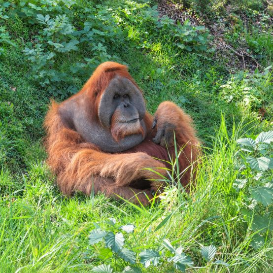
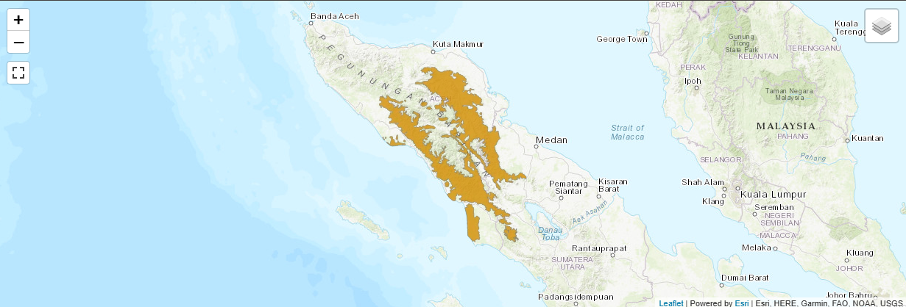

Sumatran Orangutan
Pongo abelii

| Basic Information |
|---|
| Common Name(s): Sumatran Orangutan 1 |
| Scientific Name: Pongo abelii 1 |
| Conservation Status: Critically Endangered 5 |
| Classification | ||
|---|---|---|
| Kingdom: Animalia 1 | Phylum: Chordata 1 | Subphylum: Vertebrata 1 |
| Class: Mammalia 1 | Subclass: Theria 1 | Order: Primates 1 |
| Family: Hominidae 1 | Genus: Pongo 1 | Species: Pongo abelii 1 |
Physical Profile
Size Range
Sumatran orangutans range from about 1.3–1.8 m (4.3–5.9 ft) tall and 30–90 kg (66–198 lb). 3 Females are generally smaller than males. 3
Identification Markings
Sumatran orangutans have long reddish hair, long arms, and a slender build. 3 Compared with Bornean orangutans, they generally have longer fur, white hairs around the face and groin, and long beards. 3 Adult males also develop large cheek pads. 3
Habitat & Geography
Habitats
Sumatran orangutans live mainly in tropical lowland rainforests, including mangrove, swamp, and riverside forests. 3 They spend most of their lives in trees and can occur from low elevations up to about 1,500 m. 3
Distribution
Sumatran orangutans are found only on the Indonesian island of Sumatra, mainly in the northern provinces of Aceh and North Sumatra. More than 85% of the remaining population occurs within the Leuser Ecosystem.
Distribution Map 5

Ecology & Behavior
Feeding and Diet
Sumatran orangutans eat mostly fruit, which makes up about 60% of their diet. 3 They also eat young leaves, flowers, bark, insects, and occasionally eggs. 3 Their diet changes depending on which foods are available during different seasons. 3
Behaviors and Adaptations
Sumatran orangutans are mainly arboreal and active during the day. 3 They build a new nest from branches and leaves each night and use their long, powerful arms to move through trees. 3 Some populations also use modified sticks as tools to obtain food. 2
Communication
Male Sumatran orangutans make loud “long calls” that can travel up to about 1 km through the forest. 3 Orangutans also communicate through grunts, squeaks, facial expressions, and body language. 2 3
Life History Cycle & Breeding Behaviors
Orangutans usually give birth to one infant, with twins being rare. 2 Gestation lasts about 7.5–8.5 months, and young orangutans may nurse for six to seven years. 2 Sumatran orangutan mothers generally have at least eight years between births, and young remain dependent on their mothers for many years. 2
Predators
Natural predators of Sumatran orangutans include Sumatran tigers and clouded leopards. 3 Humans are also a major threat through hunting and the illegal wildlife trade. 3